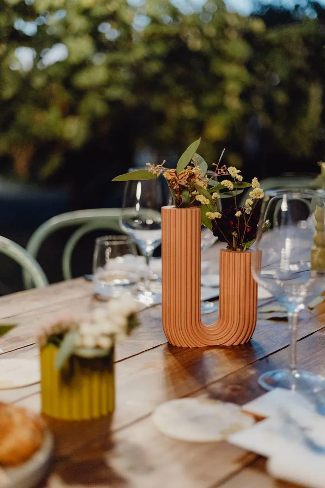
01 — Durante l'eventoComplemento d'arredo
I vasetti si dispongono sui tavoli, allestiti con fiori o decorazioni, e contribuiscono allo stile e al concept della giornata.
Vasetti stampati in 3D che durante l'evento decorano i tavoli e, a fine giornata, diventano il regalo per i vostri invitati. Estetica, funzione ed esperienza in un unico oggetto, completamente personalizzato.
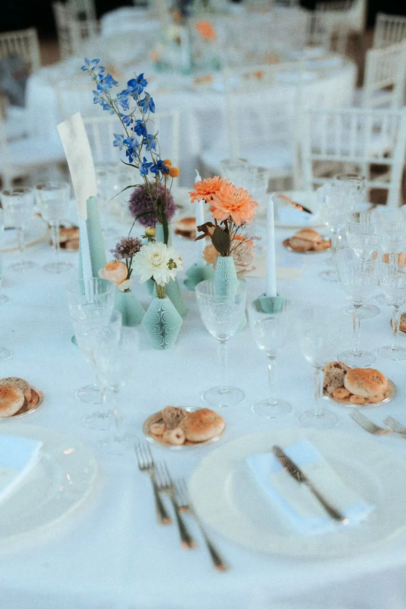
Niente centrotavola da buttare e bomboniere da aggiungere: lo stesso pezzo fa entrambe le cose. Senza sprechi e senza doppioni.

01 — Durante l'eventoI vasetti si dispongono sui tavoli, allestiti con fiori o decorazioni, e contribuiscono allo stile e al concept della giornata.
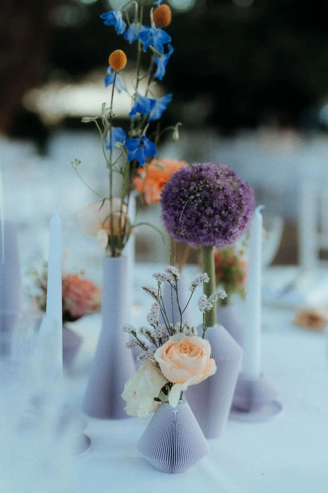
02 — A fine festaOgni invitato porta a casa il suo vasetto: un ricordo che resta in casa, non in un cassetto.
Iniziali degli sposi, data, simboli, testi o grafiche dedicate, integrati nel vasetto.
Una palette ampia e modulabile, per adattarsi al tema e all'allestimento scelto.
Avvicinando lo smartphone, l'invitato apre il sito del matrimonio, il drive con il book fotografico o qualsiasi contenuto digitale. Per rivivere la giornata anche a distanza di anni.
Alcune linee di vasetti realizzate per altri matrimoni. Ognuna nasce da un modello 3D che adattiamo a forme, colori e dettagli della vostra giornata.
Pareti a lamelle sottili che girano attorno al vaso come un ventaglio, in sagome diverse da mescolare sul tavolo.
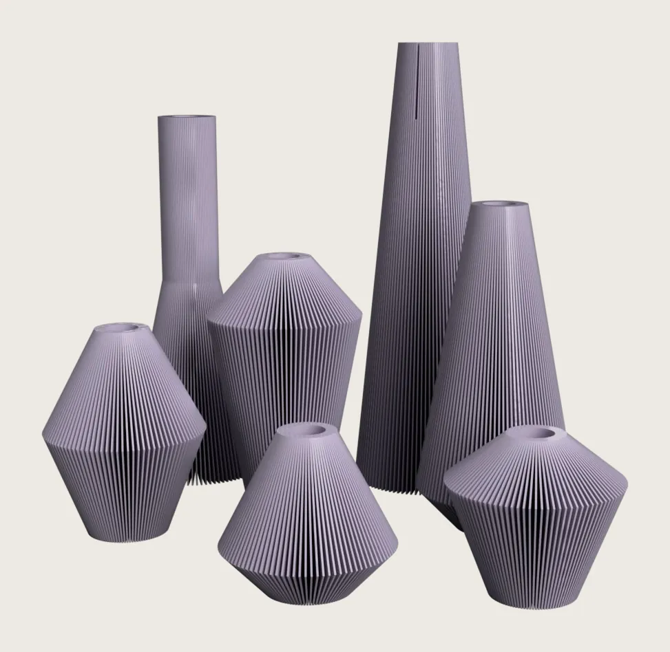
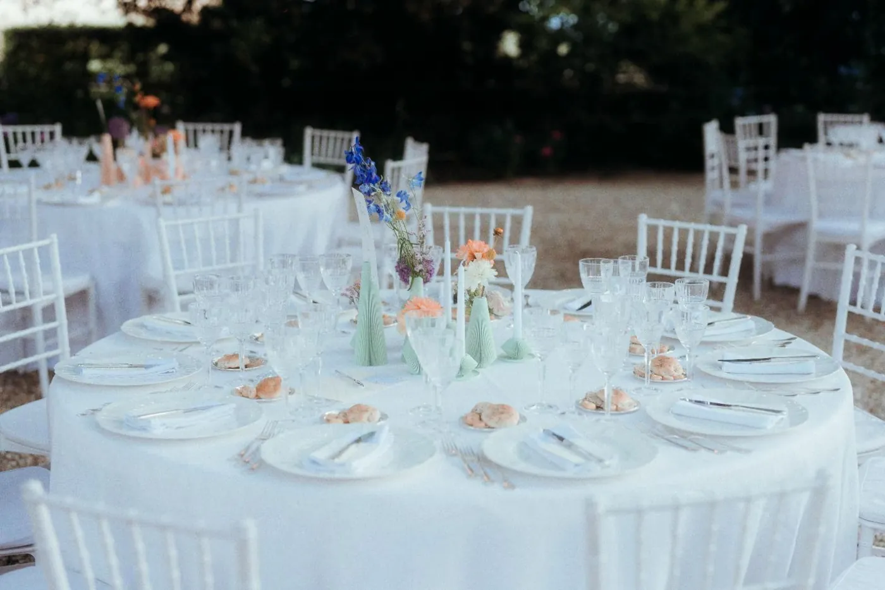
Una sezione rigata che si piega e si avvolge su sé stessa: perfetta per un singolo stelo o un piccolo mazzo.
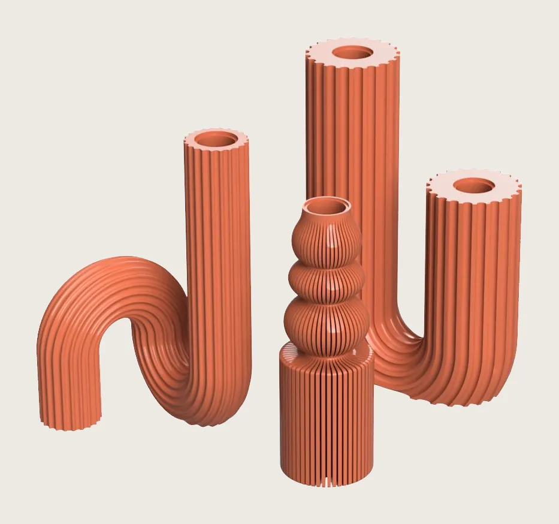
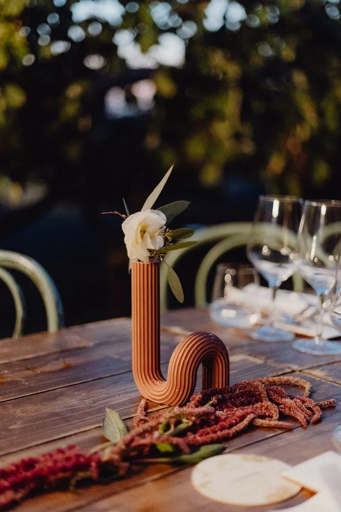
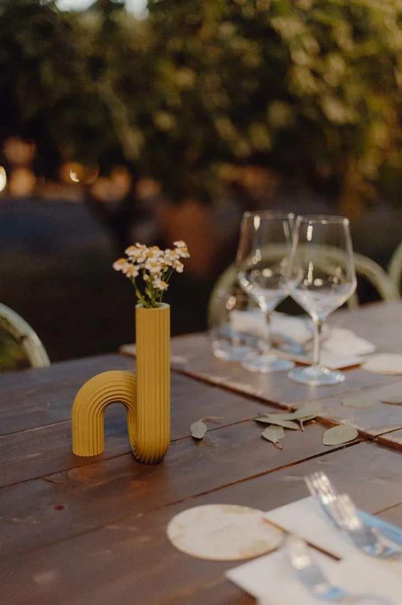
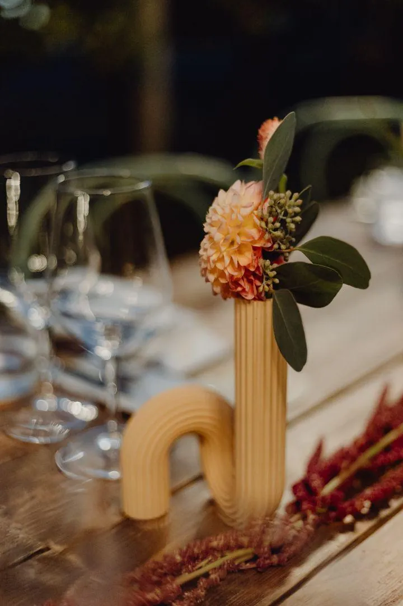
Le forme dei vasi dell'antica Grecia, ridotte all'essenziale. Qui nelle varianti salvia e terracotta.
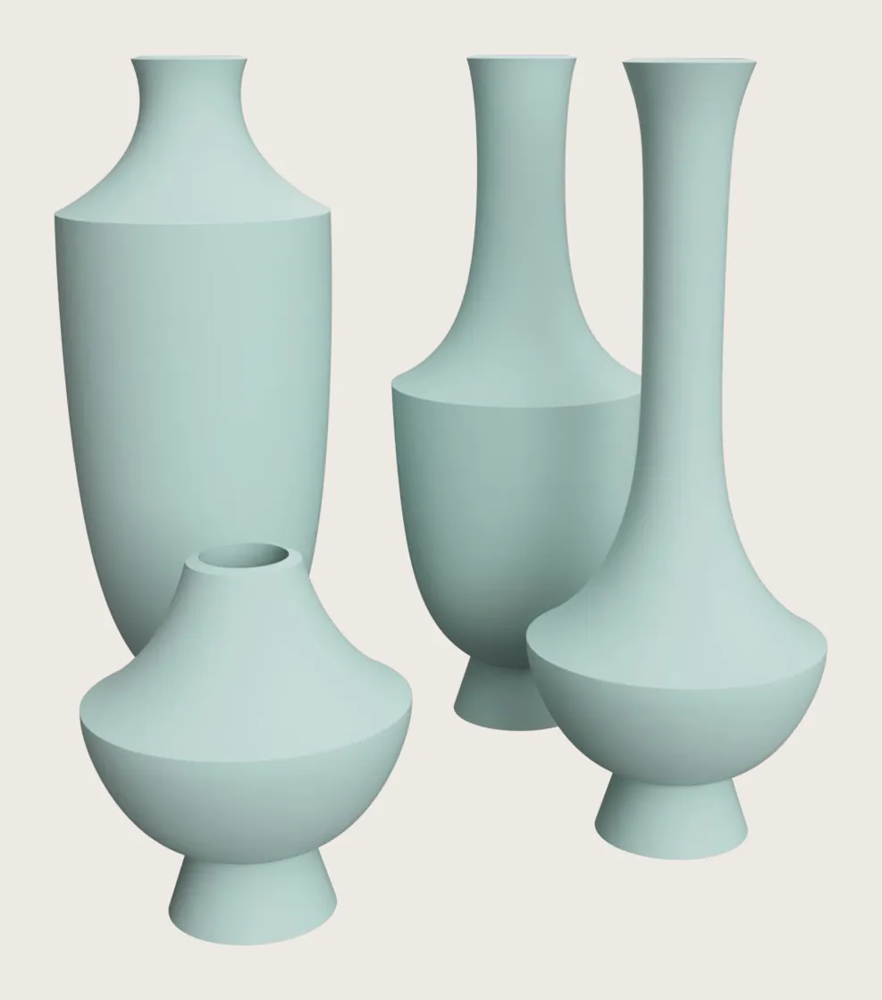
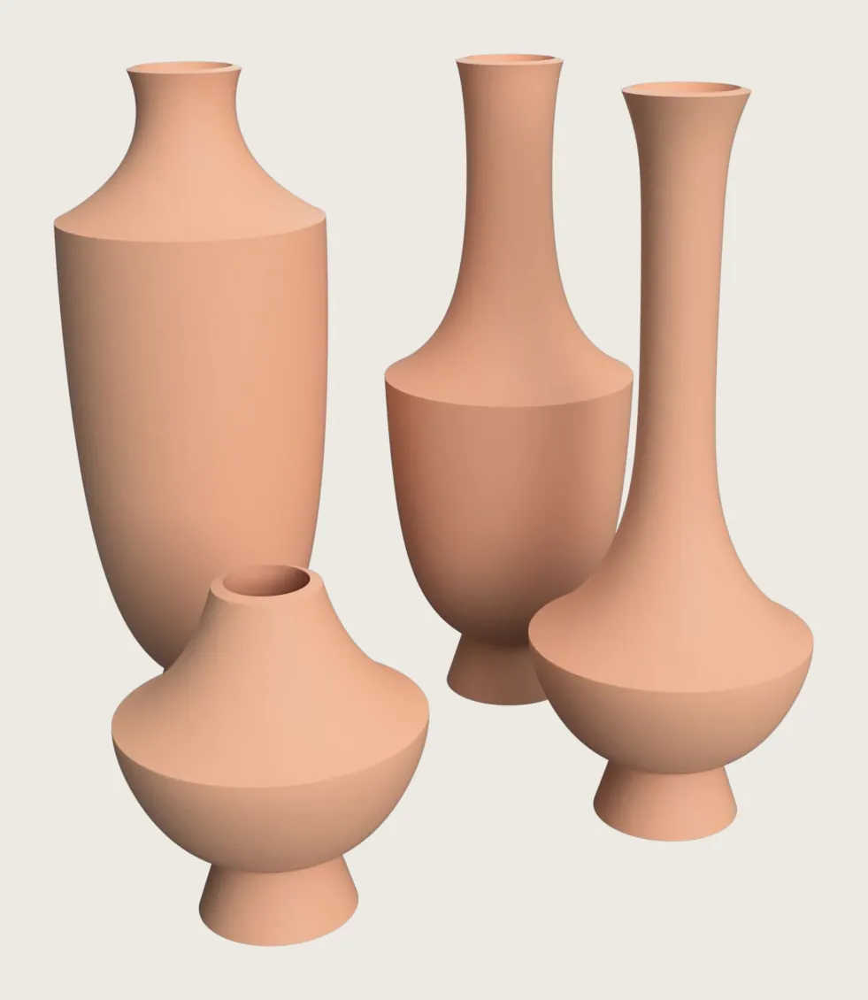
Vi consigliamo di contattarci almeno [X settimane] prima dell'evento, per avere il tempo di progettare, provare e produrre con calma.
Non solo matrimoni: realizziamo bomboniere e regali per battesimi, comunioni, lauree ed eventi aziendali. Scopri i regali per aziende →